V5 without evidence rendering
DS26 extracts coordinates from the archived numerical fits. DS29 reruns the full fit from detector outputs.


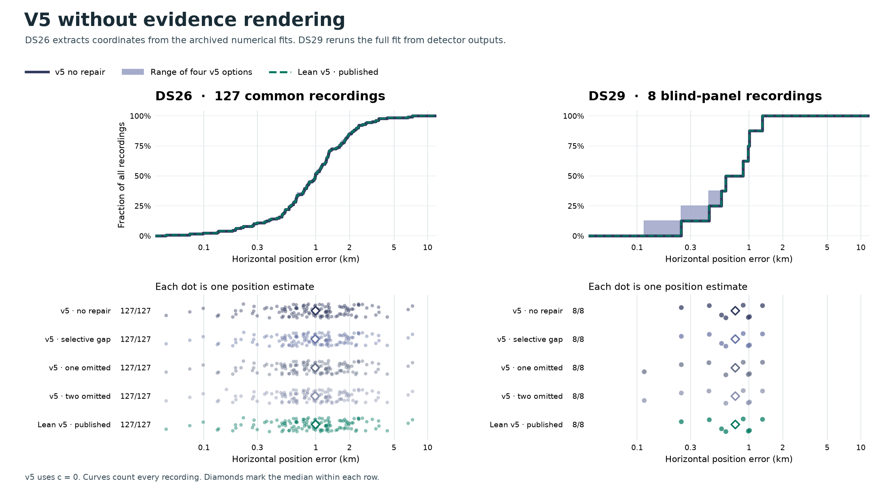
One chart for each of the ten pipeline changes. Every chart uses the same 127 DS26 and eight DS29 roof recordings and the four original v5 options. Select an image to see it at full size. The curves include withheld attempts in the denominator. Diamonds mark the median among the positions in each row.
Fitted calibration PDFFitted calibration dataZero calibration PDFZero calibration data
DS26 extracts coordinates from the archived numerical fits. DS29 reruns the full fit from detector outputs.

Batched Python GLRT, tracking and position search on 80 windows per recording.

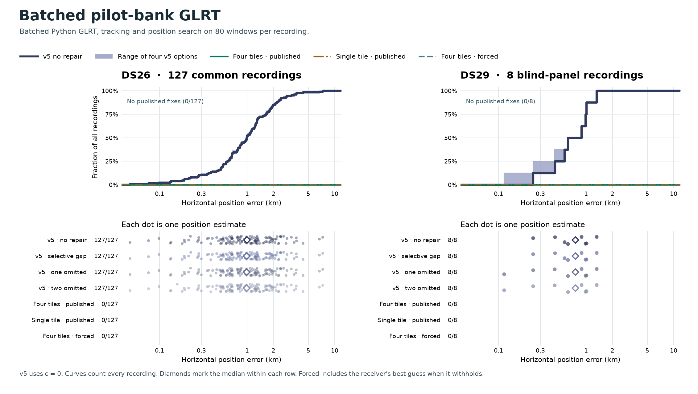
The streamed reader supplies the same 80 windows to the native GLRT, tracker and solver used for bounded raw-IQ replay.
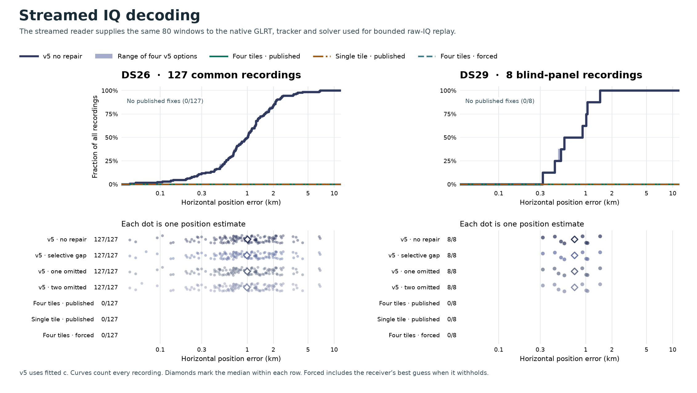
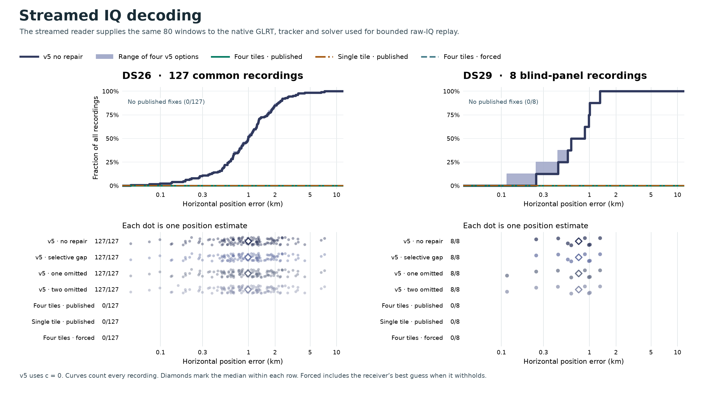
Screened Python GLRT, then tracking and position search on 80 windows per recording.

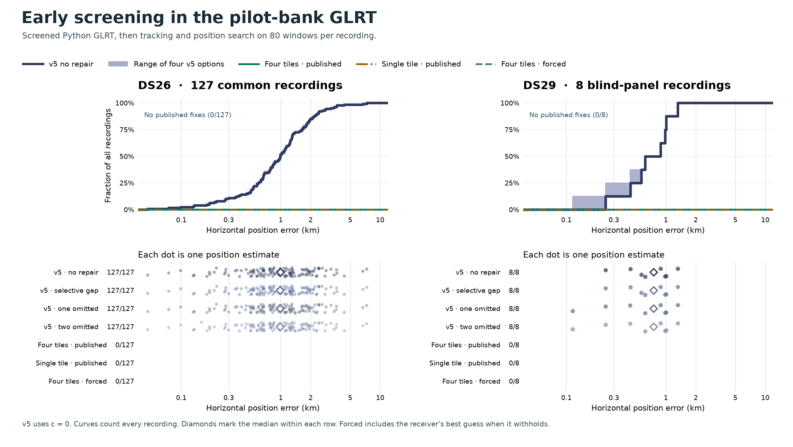
Reuse orbital states across the original single-tile and four-tile searches.


Screen below-horizon satellites before fitting the measured Doppler tracks.
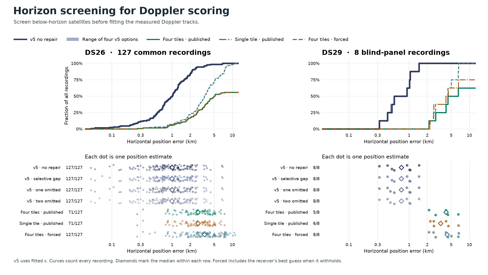

Compress the measured Doppler tracks before single-tile and four-tile search.
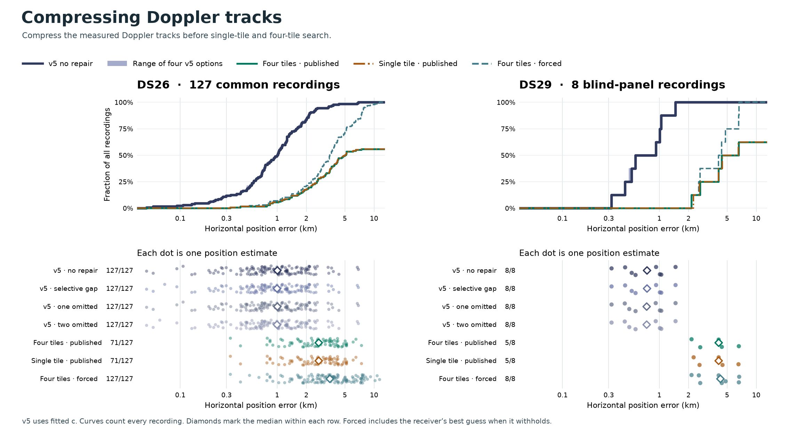

Link native GLRT peaks with a causal tracker, then run the regional solver.
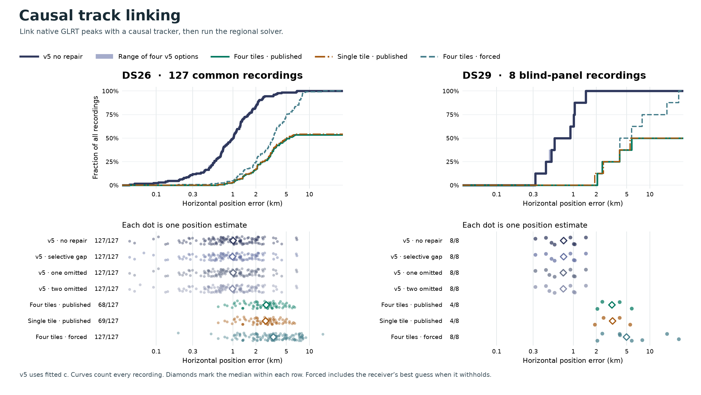

Native GLRT, tracking and position search on 80 IQ windows per recording.
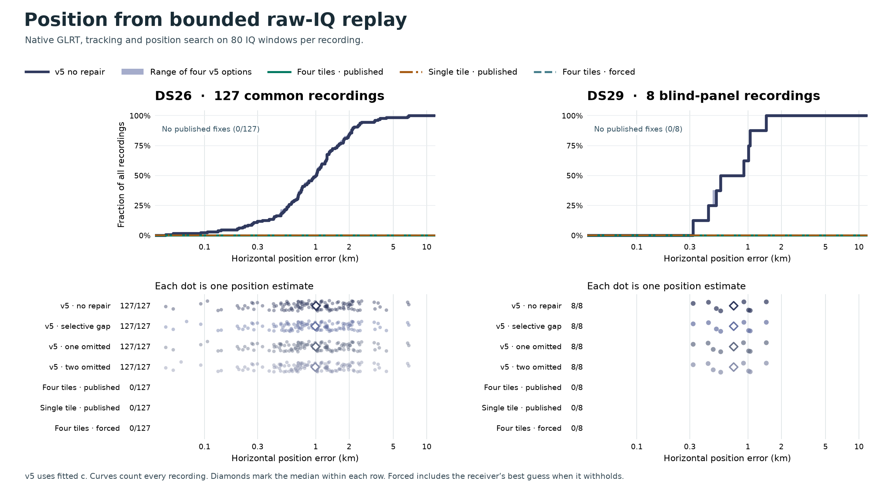
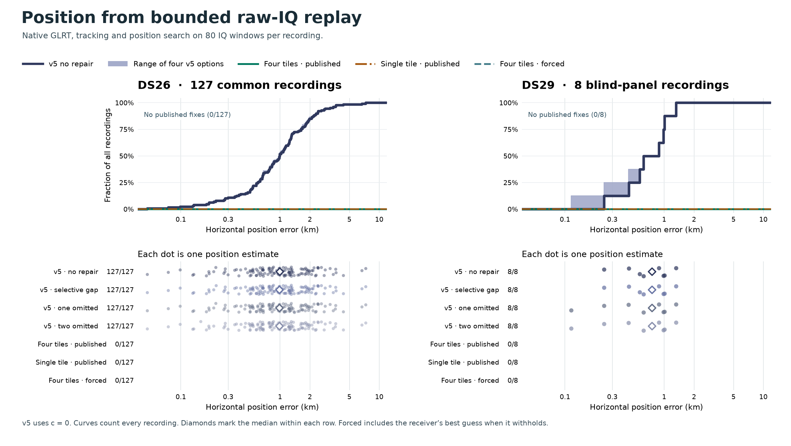
Remove per-track frequency offsets before estimating receiver position.
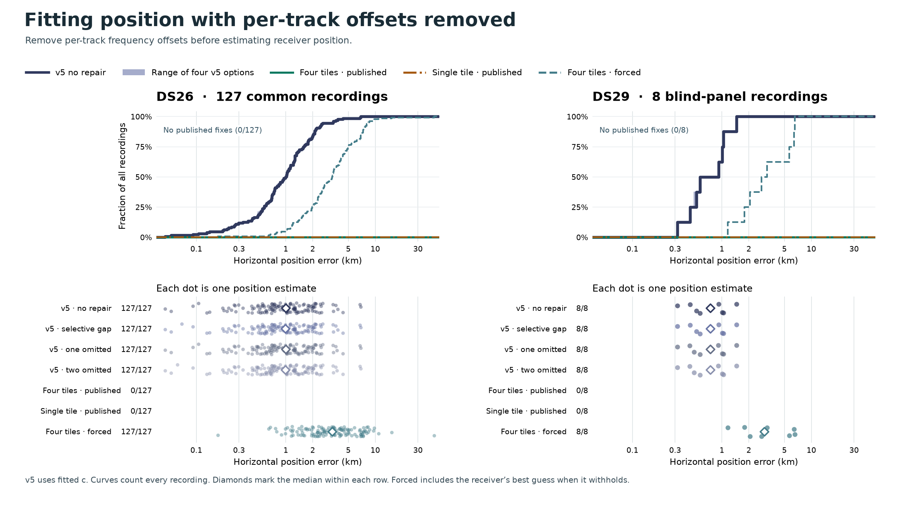